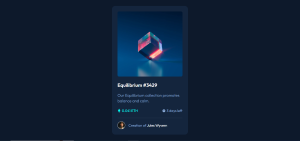

Olá,
Sou o Gabriel Albuquerque
Desenvolvedor Frontend

Sobre Mim

Olá! Me chamo Gabriel Albuquerque e sou um desenvolvedor frontend em formação! Gosto MUITO da área de tecnologia e mais ainda de desafios, e tenho certeza que posso contribuir em qualquer time com as minhas habilidades, aprimorar meus pontos fortes e melhorar onde ainda não sou bom.
Estou sempre me desafiando com novos projetos e participando de comunidades de programa√ß√£o para buscar feedback de outros desenvolvedores e desenvolvedoras. Al√©m de tentar ajudar essas pessoas com o que eu já aprendi. üòÅ
Habilidades
JavaScript
JavaScript é uma linguagem de programação que permite a você implementar itens complexos em páginas web.
HTML5
HTML (Linguagem de Marcação de HiperTexto) é o bloco de construção mais básico da web. Define o significado e a estrutura do conteúdo da web.
CSS3
CSS (Cascading Style Sheets ou Folhas de Estilo em Cascata) é uma linguagem de estilo usada para descrever a apresentação de um documento escrito em HTML ou em XML.
GitHub
GitHub é uma plataforma para gerenciar seu código e criar um ambiente de colaboração entre devs, utilizando o Git como sistema de controle.
Git
O Git é um sistema de controle de versão distribuído e amplamente adotado. O Git é uma alternativa com um funcionamento mais interessante ainda: ele é distribuído e todo mundo tem uma cópia inteira do repositório, não apenas o "servidor principal".
Projetos
Huddle
Se trata de um desafio do site front-end mentor que consiste em construir uma landing page da empresa Huddle. O site é responsivo e acessível e destaca para o usuário os estados de foco de todos os elementos presentes na página
One Piece
Se trata de uma landing page construída durante o evento Semana do Zero ao Programador Contratado, do Dev em Dobro, ela apresenta os personagens principais do anime One Piece. É uma página responsiva, acessivél e conta com recursos de interatividade com o usuário
Nft Card
Se trata de um projeto de um card que reúne as principais informações de um produto a de maneira resumida. Esse projeto foi realizado para fins de treinamento do uso do flexbox
Resumo de Resultados

Se trata de um desafio do site front-end mentor que consiste em construir um componente de resumo de resultados, que mostra os atributos memória, comunicação verbal e a capacidade visual. O site é reponsivo e acessível